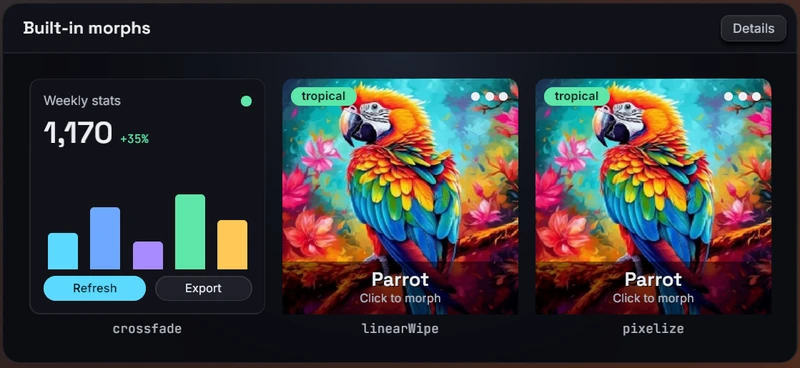

Morph filters
The morphFilter style gives a node view-transition behavior: when its
key changes, the node's previous appearance is frozen and blended into the
new content by a two-input shader, such as a crossfade or a wipe. React
swaps the content freely in the same commit; the blend runs on the Bevy
side.
Usage
function Gallery({ page }: { page: number }) {
return (
<node style={{ morphFilter: { key: page, name: "crossfade" } }}>
<Page index={page} />
</node>
);
}Changing page re-renders the content and, in the same frame, starts a
300 ms crossfade from the old page to the new one.
The key
keyis a string or a number. Only a change ofkeystarts a morph: re-renders, content changes and changes tonameorparamsalone do not.- What is frozen is the node's appearance on the last frame before the key changed, including its whole subtree.
- The first mount never animates; the key is adopted silently. The same holds for a key change in the same commit as the mount: the node needs at least one rendered frame to freeze.
- A key change during a morph freezes the in-flight blend, as it looks at that moment, and starts again from there. Interruptions stay smooth.
- Removing
morphFilterstops a running morph at once and shows the live content. - With an unknown name, or a regular filter's name, the key is adopted
without animating and a
morphFilterUnknownormorphFilterParamsdevtools warning is reported.
Timing
A morph eases over 300 ms with easeInOut by default, without any
transition. transition: { morphFilter } replaces that timing:
<node
style={{
morphFilter: { key: tab, name: "linearWipe", params: { softness: 24 } },
transition: { morphFilter: { duration: 600, easing: "easeInOut" } },
}}
/>The override is a complete timing: an omitted easing falls back to
linear, the general transition default, not to the morph's easeInOut.
delay holds the old appearance before the blend starts. See
Style transitions for the timing
options.
Built-in morphs
crossfade
A cross-dissolve, staggered by a smooth noise pattern so that blob-shaped regions change before others.
| Param | Default | Effect |
|---|---|---|
spread |
0.6 |
Stagger amount, 0 to 1; 0 is a plain uniform crossfade |
scale |
56 |
Size of the noise blobs, in logical pixels |
softness |
0.5 |
How long each pixel takes to fade, as a fraction of the morph (0 to 1) |
seed |
0 |
Changes the noise pattern |
linearWipe
The new content sweeps in across the old along a direction.
| Param | Default | Effect |
|---|---|---|
angle |
0 |
Sweep direction, clockwise from +x: 0 is left to right, 90 downward |
softness |
0 |
Width of the soft band at the wipe edge, in logical pixels |
pixelize
Both images break into a mosaic whose cells grow until the middle of the morph and shrink again, crossfading underneath.
| Param | Default | Effect |
|---|---|---|
squaresMin |
[20, 20] |
Cells across x and y at the coarsest point |
steps |
50 |
Number of discrete cell sizes; 0 or less for a continuous ramp |
Custom morphs, written in WGSL, are used the same way; see Custom filters.
Layout during a morph
The frozen image is attached to the node's box. If the node moves or scrolls during the morph, both images move together. If its size changes, the old image is stretched to the new size, so keep the size stable across a key change (a fixed-size slot, or the same layout for both contents) unless a stretch looks right.
Morphing from and to nothing
An empty node is a valid source and target: a mounted node that paints nothing freezes as transparent pixels. This makes enter and exit animations possible with a carrier node that stays mounted around the content:
import { type ReactNode, useEffect, useState } from "react";
function FadeIn({ show, children }: { show: boolean; children: ReactNode }) {
const [mounted, setMounted] = useState(false);
const [armed, setArmed] = useState(false);
useEffect(() => {
if (show) {
setMounted(true);
// Let the empty carrier render one frame first.
const t = setTimeout(() => setArmed(true), 50);
return () => clearTimeout(t);
}
setArmed(false);
// Keep the carrier until the 300 ms blend is over.
const t = setTimeout(() => setMounted(false), 300);
return () => clearTimeout(t);
}, [show]);
if (!mounted) return null;
return (
<node
style={{
morphFilter: { key: armed ? "on" : "off", name: "crossfade" },
}}
>
{armed && children}
</node>
);
}- Toggle the content in the same commit as the key.
- On entry, the carrier must have rendered at least one frame empty before
the key changes. A
useEffectalone is too early; a short timeout is enough. - On exit, keep the carrier mounted until the blend has finished.
Combining with other styles
- A
filteron the same node applies on top of the blend: the chain filters what the morph produces. opacityfades the blended result, and atransform3dtransforms it.
Animated params
Every param accepts an inline { animated } binding to a shared value, in
the param's units (pixels, degrees), in the base style only. The blend's
own progress is driven by the morph and cannot be bound. Static param
changes apply immediately and never start a morph.
Cost
morphFilter promotes the node to a composited layer, even
while no morph is running, so its last appearance is always cached and
ready to freeze. During a morph, the frozen image and the blend take two
more textures of the node's size and one blend pass runs per frame; the
textures are released when the morph ends.
The built-in morphs are compiled at startup. If you turn that off with
precompile_filters, a morph's shader is
compiled as soon as a node declares it; a key change that arrives before
compilation finishes draws nothing for a few frames, a visible blink.
Limits
- A size change across the key change stretches the old image.
- A node that mounts and changes its key in the same commit does not animate.
- Under a
transform3d, a morph-only layer is sampled without mipmaps, so a strongly tilted or shrunk blend can shimmer. - The layer limits apply: content painted outside the
node's border box is cut off, and inside a
<surface>the content switches without a blend.

See morphFilter in the
style reference, and
crossfade,
linearWipe and
pixelize in the filter reference.